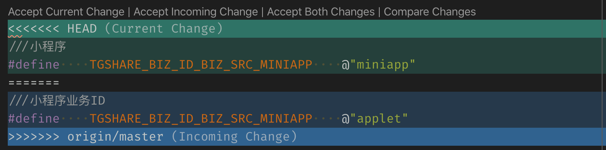

git解决代码冲突
本文梳理了解决 git 冲突的基本操作方法。
manual resolve#
Resolving a merge conflict using the command line
conflict marker <<<<<<<
Delete the conflict markers <<<<<<<, =======, >>>>>>> and make the changes you want in the final merge.
Add or stage your changes and commit.
<<<<<<< HEAD
///小程序
#define TGSHARE_BIZ_ID_BIZ_SRC_MINIAPP @"miniapp"
=======
///小程序业务ID
#define TGSHARE_BIZ_ID_BIZ_SRC_MINIAPP @"applet"
>>>>>>> origin/master
Git: Handling Merge Conflicts Using "Ours" and "Theirs"#
Using --ours/--theirs during a merge
(feature) $ git merge master
Auto-merging myscript.py
CONFLICT (content): Merge conflict in myscript.py
Automatic merge failed; fix conflicts and then commit the result.
Use --ours keep the version in the current branch
Use --theirs to keep the version from the branch being merged in
Git – Resolve Merge Conflicts#
Change working directory to project folder.
Search for all conflicting files.
Above will list all files which has marker special marker <<<<<<< in them.
Resolve easy/obvious conflicts
At this point you may review each files. If solution is to accept local/our version, run:
If solution is to accept remote/other-branch version, run:
If you have multiple files and you want to accept local/our version, run:
If you have multiple files and you want to accept remote/other-branch version, run:
For complex conflicts
For files that needs manual review/edit, use vim or any text editor to resolve differences.
Resolve Git merge conflicts in favor of their changes during a pull#
$ git help merge
-X <option>, --strategy-option=<option>
Pass merge strategy specific option through to the merge strategy.
Note that
-srecursive here is redundant, since that's the default merge strategy.
Or, simply, for the default repository:
The
git pull -X theirsanswers may create an ugly merge commit,
If you're already in conflicted state...
git checkout --theirs path/to/file
This doesn't work if you are already in the conflict resolution state.
In that case I believe the best way to resolve is to git checkout <ref to theirs> -- the/conflicted.file and then git add their changes.
Please not that sometimes this will not work:
I did this instead, assuming HEAD is ours and MERGE_HEAD is theirs
# 主干合入分支时，优先采用当前主干 HEAD，再手动合入
$ git checkout HEAD -- path/to/file
# 分支 rebase 主干时，以主干 MERGE_HEAD 为准，再手动合入
$ git checkout MERGE_HEAD -- path/to/file
After we do this and we are good:
采用本端的 HEAD 或远端的 MERGE_HEAD，以一方作为参考基准之后，再手动将相对修改合入基准，再提交。
执行 git merge origin/master 有冲突时，可以
执行 git rev-parse HEAD 和 git log -1 | cat 查看确认当前 index 的版本号；
执行 git rev-parse MERGE_HEAD 和 git log -1 origin/master | cat 查看确认 origin/master 的版本号。
refs#
Resolve conflict using "MERGE_HEAD (origin/HEAD)"
vscode 快捷解决冲突：

- Accept Current Change: ours
- Accept Incoming Change: theirs
- Accept Both Changes: first ours, then theirs
- Compare Changes: compare side-by-side